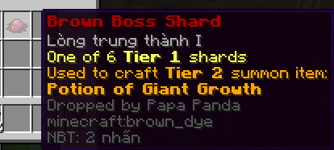

Papa Panda
Triệu hồi bằng cách đặt các vật phẩm như hình xuống mặt đất sau đó dùng bánh kem chuột phải vào giữa.
Yêu cầu: triệu hồi ở Biome rừng tre (Bamboo Biome)

Vật phẩm có thể rơi ra từ Boss.
Còn nhiều vật phẩm nữa, tự trải nghiệm nhé :D